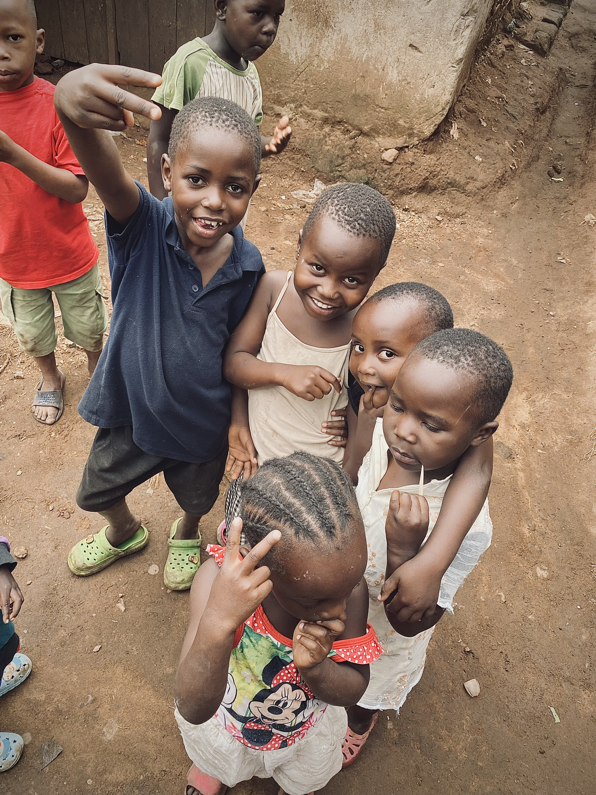
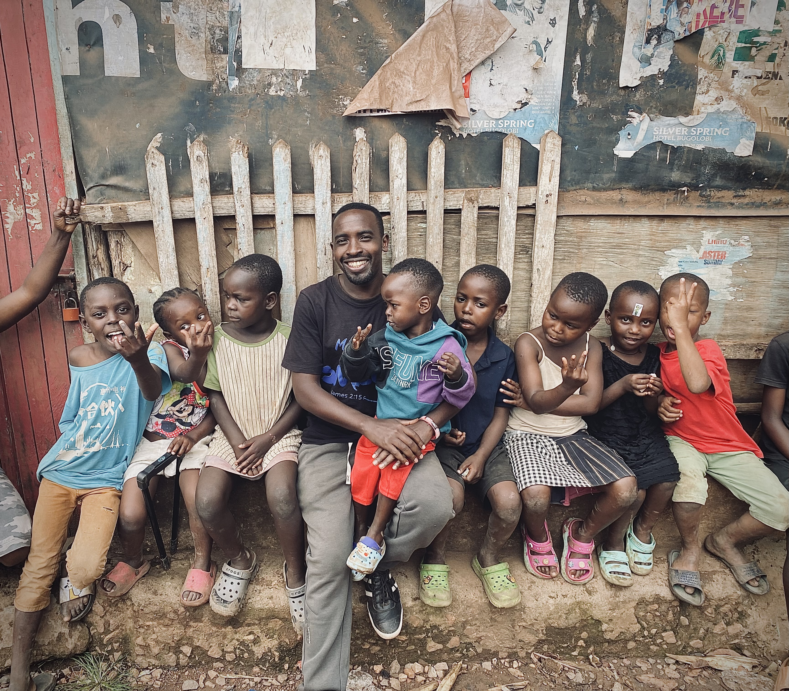
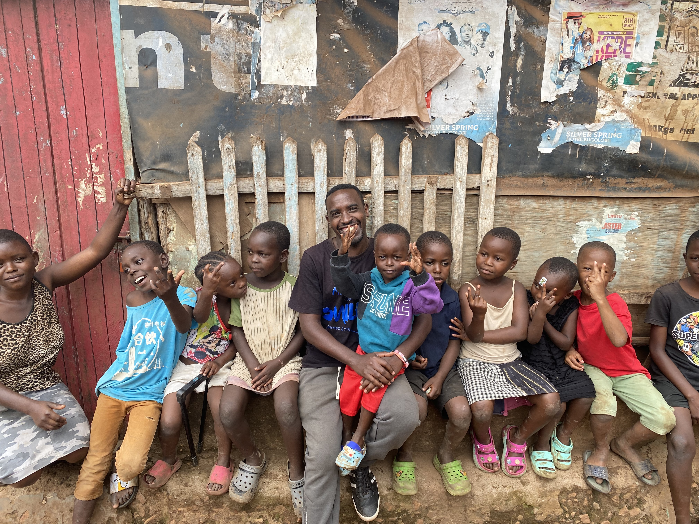
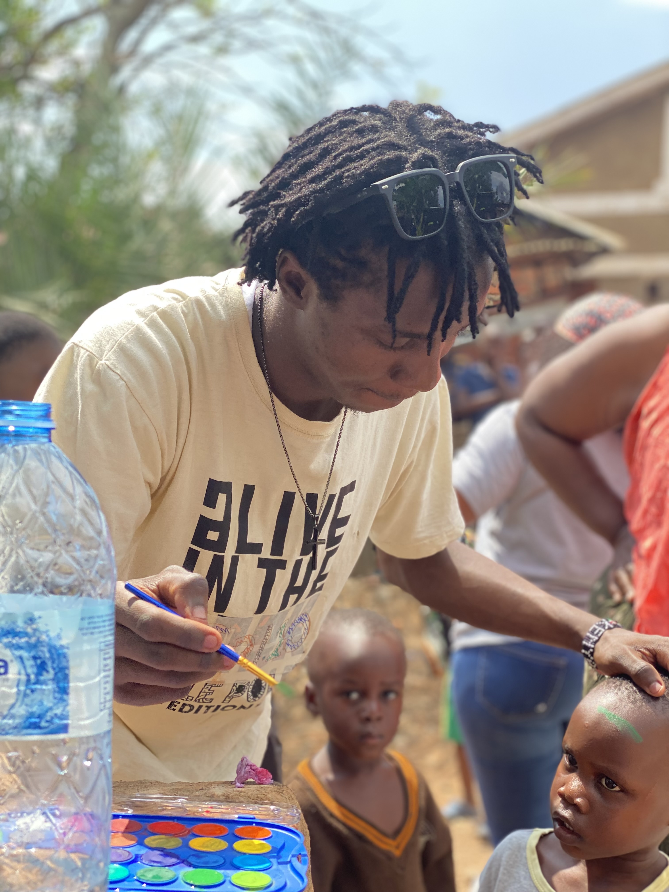
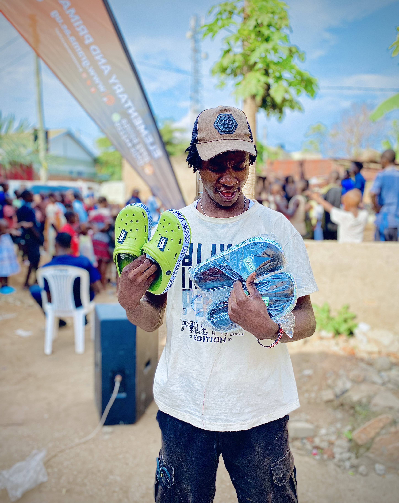
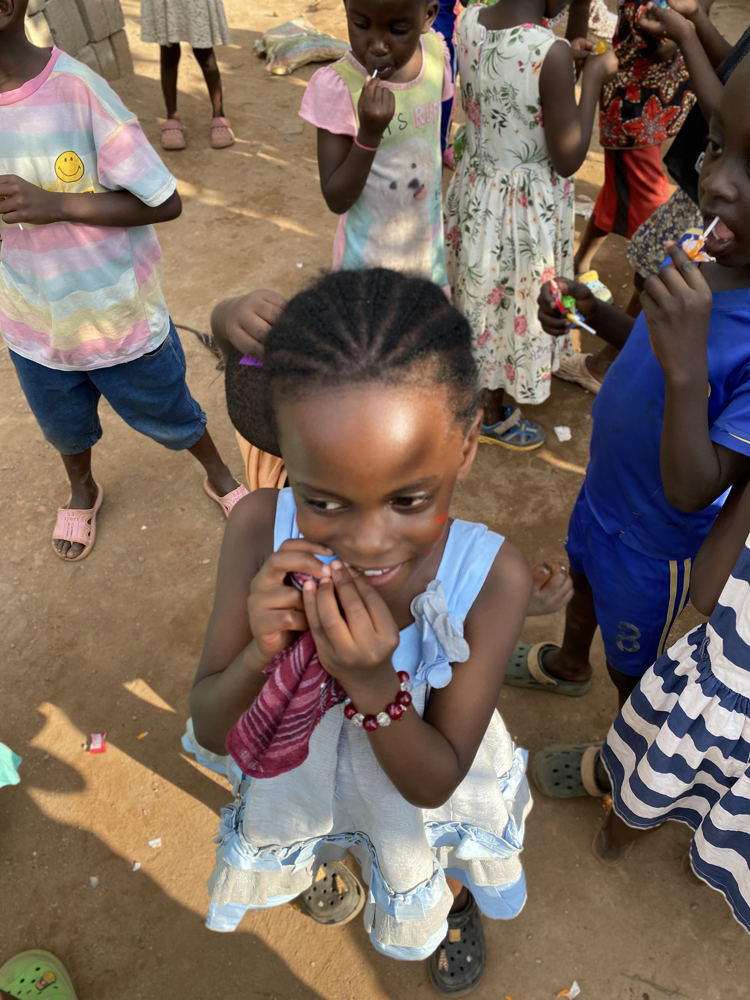
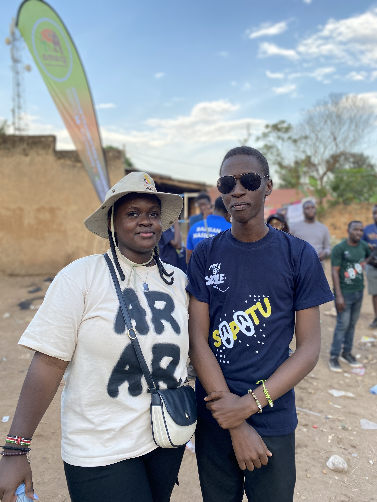

The Daily Bread Issue
Direct food support for families navigating hunger, instability, and the everyday weight of survival.
Learn MoreEvery meal shared, every shoe placed, every girl protected — this is the everyday editorial of hope in motion across Uganda.
Make a Face Smile is more than a charity campaign. It is a living story of faith in action — where care is practical, dignity is non-negotiable, and every act of support becomes a chapter in restoring hope to communities that deserve to be seen, protected, and celebrated.
To provide essential resources and sustainable support to marginalized families in Ugandan communities.
A future where every individual has the opportunity to thrive and smile with dignity.

Every shilling is accounted for and tracked. Stewardship is our highest form of worship.
We see brothers and sisters made in the image of God, leading with empathy in every hand extended.
We build systems—like skills training and savings circles—that empower the future.

Creative Director

Director of Operations

Volunteer Coordinator

Program Coordinator
Direct food support for families navigating hunger, instability, and the everyday weight of survival.
Learn More
Helping children step into school with confidence by providing shoes, essentials, and the dignity of being prepared.
Learn More
Practical care for girls in crisis — hygiene support that protects health, confidence, and full participation in school.
View Goals"Let us not love with words or speech but with actions and in truth." — 1 John 3:18
Every shoe we provide and every meal we serve is a "physical sermon." We serve because we have been first loved by Him.
Join the MissionYour generosity fuels our projects, restores dignity, and creates lasting change. We are committed to 100% transparency.
Moments from outreach, shared meals, and community restoration that remind us why this mission exists.